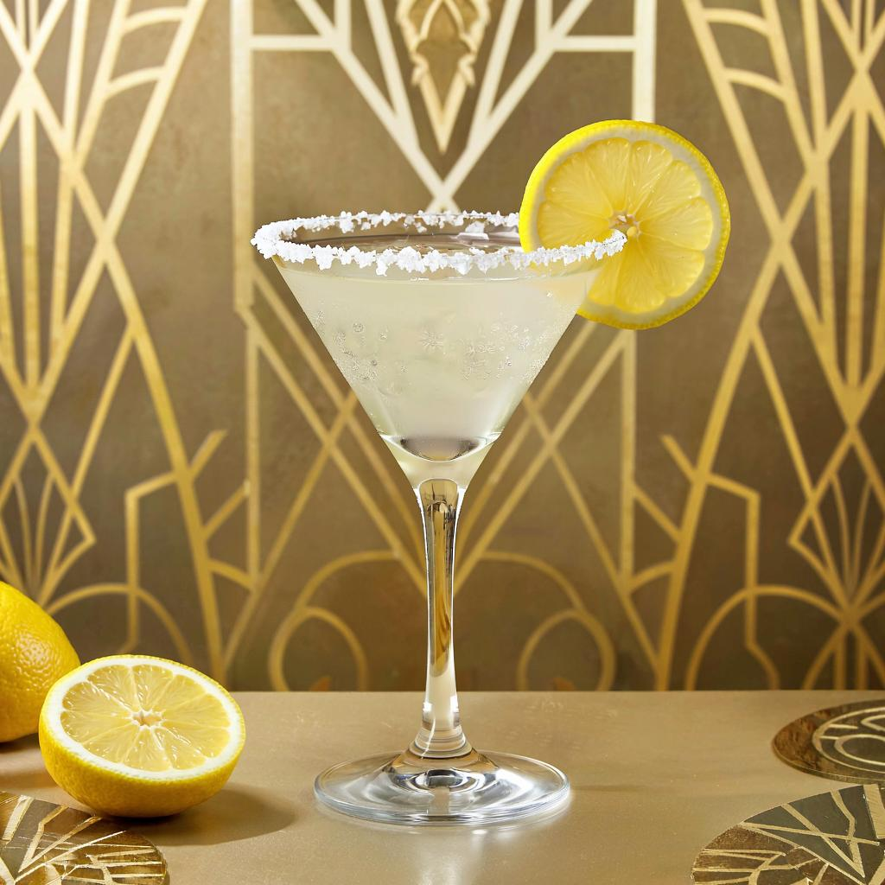

The White Lady cocktail

Servings: 1 cocktail
- 1 1/2 ounces gin
-
3/4 ounce Cointreau, (or another orange-flavored liqueur, see headnote)
- 3/4 ounce freshly squeezed lemon juice
- lemon twist, for garnish
-
Add the gin, Cointreau, and lemon juice to a cocktail shaker. Fill
two-thirds with ice, cover, and shake vigorously until well-chilled,
about 15 seconds.
- Strain into a chilled coupe glass and garnish with a lemon twist.
BACK